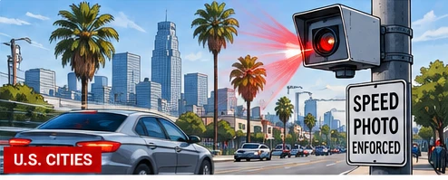

LOS ANGELES SPEED CAMERAS PROMPT SAFETY AND PRIVACY DEBATE
Automated speed enforcement raises questions about crash prevention, surveillance and accountability.

AI-generated editorial illustration; not a photograph of the reported event.
The expansion of automated speed enforcement in Los Angeles is fueling debate over the balance between traffic safety and privacy. Supporters say cameras can discourage dangerous driving and help protect pedestrians on streets with serious crash risks. Critics question how images and vehicle data will be handled, whether enforcement will be fair, and how cities will demonstrate that safety rather than revenue is the priority. The central policy questions include where cameras are installed, what data is retained, how motorists can appeal citations and whether crash rates decline after deployment. Specific program details should be checked against current city rules.